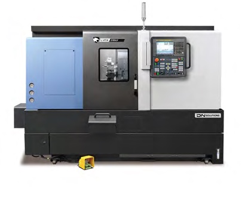

Под заказ- Ø точения300–380 мм
- Длина заготовки510–610 мм
- Ось Y±52,5 мм
- Шпиндель3500–6000 об/мин
- Срок поставки под заказот 1 до 5 месяцев
4 модификации: Lynx 2105LY, Lynx 2105LSY, Lynx 2605Y, Lynx 2605SY
Технические характеристики
| Характеристика | Ед. | Lynx 2105LY / LSY (6″) | Lynx 2105LY / LSY (8″) | Lynx 2605Y / SY (10″) |
|---|---|---|---|---|
| Макс. диаметр точения | мм | Ø300 (236) | Ø300 (236) | Ø380 |
| Макс. длина заготовки | мм | 510 | 510 | 610 |
| Макс. диаметр прутка | мм | Ø51 | Ø65 | Ø81 |
| Диаметр патрона | мм | Ø170 | Ø210 | Ø243 |
| Макс. мощность шпинделя | кВт | 15 | 15 | 18,5 |
| Макс. скорость шпинделя | об/мин | 6000 | 4500 | 3500 |
| Макс. крутящий момент | Н·м | 127 | 169 | 403 |
| Ход по оси X | мм | 205 | 205 | 250 |
| Ход по оси Y | мм | 105 ± 52,5 | 105 ± 52,5 | 105 ± 52,5 |
| Ход по оси Z | мм | 560 | 560 | 680 |
| Ось C | град | 360 | 360 | 360 |
| Скорость перемещения по X | м/мин | 30 | 30 | 30 |
| Скорость перемещения по Y | м/мин | 10 | 10 | 10 |
| Скорость перемещения по Z | м/мин | 36 | 36 | 30 |
| Скорость оси C | об/мин | 200 | 200 | 150 |
| Кол-во инструментальных гнёзд | шт. | 12 | 12 | 12 {24} |
Горизонтальный токарный центр с осью Y и вспомогательным шпинделем, патрон 6/8/10 дюймов. { } — опция. Характеристики приведены по данным производителя; точную конфигурацию, цену и срок поставки уточняйте у менеджера.